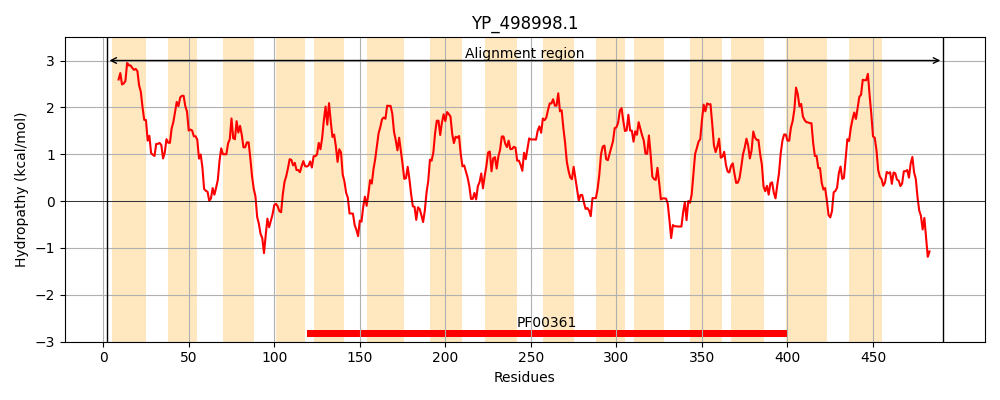
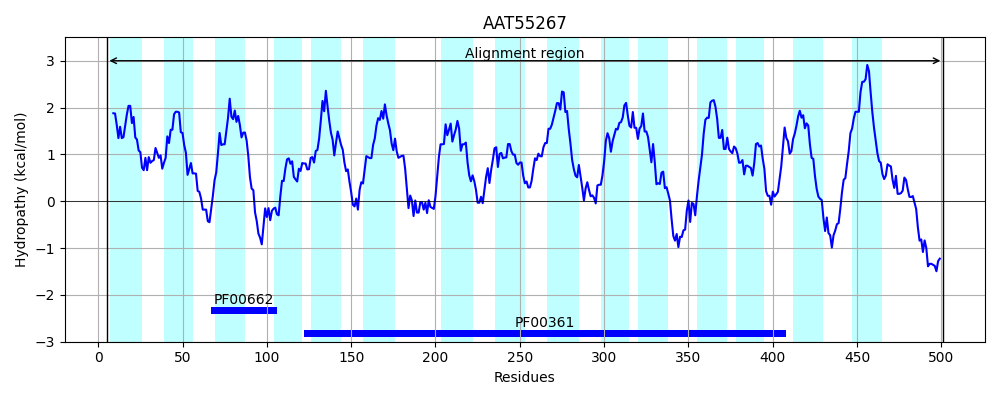
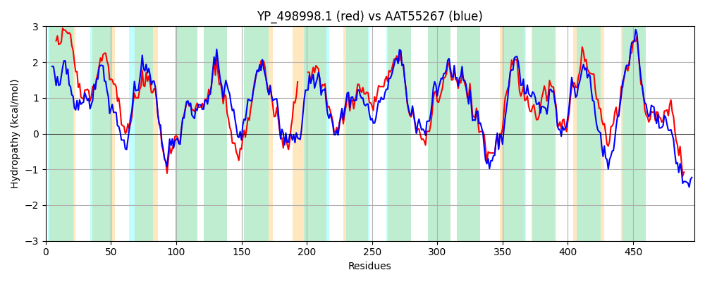

Hit Accession: AAT55267
Hit TCID: 9.A.2.1.3
Hit Description: gnl|BL_ORD_ID|1015 gnl|TC-DB|AAT55267.1|9.A.2.1.3 NADH dehydrogenase, subunit 5 [Bacillus anthracis str. Sterne]
Mach Len: 497
e:0.000000
Query TMS Count : 15
Hit TMS Count: 15
TMS-Overlap Score: 11.100000
Predicted Substrates:None
BLAST Alignment:
Score: 1325 , Bit scores: 514 bits, E-value: 2.7e-180, Alignment length: 497, Percentage identity: 50
Query: 2 LSFQLLFSLFVIALIIALISGLLFLAPVMPMRYIKLHLYILVMPVLFAVIGFFGIHGQHVLGPFKIDRLSWLLAGFVMALGFIIQKFSMRYLLGDHHYRHYFPLFTAITSFASLAWMSEDLRLMALCWGITLLCLTLLMNVNRFWKVPRESAKLSSMTFLCGWLAFVGAIVTIYIATGEWRVPQHIVHPTWSLL-------TNVLLVLAVMIPAAQFPFHRWLIESVTAPTPVSAIMHAGIVNAGGVILTRFAPIFDNGFALSLLLILSSISVLLGSGISLVQVDYKRQLVGSTMSQMGFMLVQCALGVYSAAIIHLILHGIFKATLFLQSGSIVKRFNIPKQASAKDAYGWIVMGRVLAIIVAFLFWMSSDRSAYEVLSALILGWSLLVSWNQMVAFSKGRMARLVGMILIAIVTFIYVITHNYFYAVLQNITTHATTPPTVSVIISVVILIFGSLLSIWVARHRYSKAFAVLYVWLVNLGEARSKAIESHPNYLK 491
LS L +LF IAL + +SGLLFL MP+R++ +H+ I +P L +++ +G V+GP+ +D L+WL+A FV+ +G IIQ+FS+RYL+GD YR YF LFT T +S+AW+S+DLR M +CWG TL+ L LL+ +N+ WKV E+ K+S F W+A + AI+ ++ TG+W++ + + + N+L+++AVMIPAAQ+PF RWLIES APTPVSAIMHAG+VNAGG++LTRF+P+F + A +LLI SSISVL+G+GISLVQVDYKRQLVGST++QMGFML+QCALG Y AA+IHLILHG+FKATLFLQ+GS V+R + KQ++ K + W+++GRVL + +A FW + Y+++SALILGWSL SW Q+V F +GRM R+ G+I++ + IY HN Y L + P +VI + IL+F S++ +V R++ S AVLY+W V +GEAR K++ESHP+YLK
Sbjct: 5 LSSSTLLTLFFIALSASWLSGLLFLHARMPLRFVHIHIGIAALPSLVSLLALVNNNGDRVVGPWHLDTLAWLMAFFVLTIGLIIQRFSVRYLMGDRSYRKYFALFTFTTGVSSVAWLSDDLRFMIMCWGATLIGLVLLIGLNKGWKVVSEATKISGYLFTISWIALLSAIIWLFQITGQWQLTSVVTNENVAQFGTLEKTGINLLIIVAVMIPAAQWPFQRWLIESAVAPTPVSAIMHAGLVNAGGIMLTRFSPLFHDDIAQIILLIFSSISVLIGTGISLVQVDYKRQLVGSTIAQMGFMLIQCALGAYLAAVIHLILHGLFKATLFLQAGSSVQRVEVVKQSNKKMSNLWMIVGRVLGLFIAIAFWFITSGEGYQLVSALILGWSLYFSWKQLVVFGEGRMGRIAGLIVLIGFSLIYFTVHNSLYKWLHTDMYQSVQPSAPAVIFVICILLFSSVICTFVTRNQSSTLSAVLYLWSVRVGEARRKSVESHPSYLK 501 | Protein Hydropathy Plots: |
|---|
|  |  |
Pairwise Alignment-Hydropathy Plot:
|
|---|
|  |